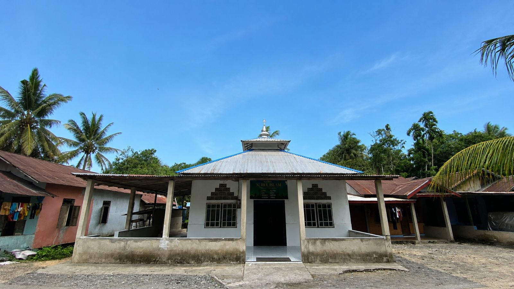

Yang Ada di Desa Sepadu
Kenali berbagai fasilitas dan pemandangan yang menjadi bagian dari kehidupan masyarakat.

Jembatan Desa
Jembatan menjadi salah satu akses penting bagi masyarakat dalam melakukan aktivitas dan menghubungkan lingkungan desa.

Mushola
Mushola menjadi tempat masyarakat untuk melaksanakan ibadah serta kegiatan keagamaan di lingkungan desa.

SDN 10 Semayang
SDN 10 Semayang merupakan salah satu fasilitas pendidikan yang mendukung kegiatan belajar anak-anak di lingkungan sekitar.

Persawahan
Persawahan menjadi salah satu bagian dari pemandangan alam dan kehidupan masyarakat di sekitar Desa Sepadu.

Pemandangan Desa
Suasana lingkungan desa yang asri dapat menjadi salah satu daya tarik dari Desa Sepadu.